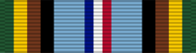

Armed Forces Expeditionary Medal
Service awardAFEM
For participation in designated U.S. military operations facing foreign armed opposition, after July 1, 1958.
Check your eligibility and build your ribbon rackHow you get it
You earn this by meeting the requirements. No recommendation is needed. If it's missing from your record, current members can have their MPF add it. Veterans can request it from AFPC with a Standard Form 180 and supporting documents.
You qualify if any of these apply
- Participated in a DoD-approved operation for the AFEM (listed in DoD 1348.33 Vol. 2 and the AFPC awards database) and met its time-in-area requirement
Quick facts
- Category
- Campaign and service
- Type
- Service award
- Authorized devices
- Service Star
- WAPS points
- 0
- Position in the AFPC listing
- 45 of 91 (listed in order of precedence)
Full AFPC fact sheet text
Background
This medal was established on Dec. 4, 1961, to be awarded to members of the United States armed forces who, after July 1, 1958, have participated in a United States military operation and encountered foreign armed opposition, or were in danger of hostile action by foreign armed forces.
Criteria
Refer to Department of Defense 1348.33 Vol 2 and/or the DOD Personnel and Readiness webpage for approved operations which qualify for this award. Also, a listing of DOD-recognized military campaigns associated with eligibility for the Armed Forces Expeditionary Medal is provided at the Air Force Personnel Center ACCESS awards database.
Medal description
The obverse has an eagle with wings raised, perched on a sword. In back of this is a compass rose, with rays coming from the angles of the compass points. This design is encircled by the inscription “Armed Forces” at the top and “Expeditionary Service” below. Between these words, completing the circle is a sprig of laurel on each side.
The reverse has the shield as it appears on the presidential seal. Below this are branches of laurel to right and left, joined in the center by a knot. At the top, in a semicircle, is the inscription “United States of America.”
Ribbon description
The ribbon has three narrow stripes of blue, white, and red in the center, flanked by wide stripes of light blue and, on each side, four equal stripes of black, brown, yellow, and green. The center stripes symbolize the United States, and the many colors at the edges symbolize other areas of the world.
Authorized devices
Service Star
Source: Armed Forces Expeditionary Medal fact sheet, Air Force's Personnel Center